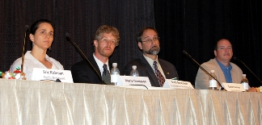
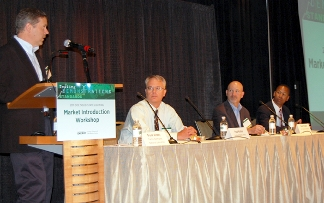

More than 275 lighting leaders from across North America gathered in Seattle July 12–14, 2011, for the sixth annual Solid-State Lighting (SSL) Market Introduction Workshop, hosted by DOE. The diverse audience spanned the spectrum from industry, to government, to efficiency organizations, to utilities, to municipalities, to designers and specifiers, to retailers and distributors. The purpose was to share the latest insights, updates, and strategies for the successful market introduction of high-quality solid-state lighting products.
Pre-Conference Tutorials
The two-day workshop began on July 13 but was preceded by an optional half-day of free, beginner-level tutorials on July 12. These tutorials covered the basics on LED lighting—from technology fundamentals; to real-world experiences with LED lighting installations; to results from product testing; to understanding LM-79, LM-80, and TM-21; to using the Lighting Facts® program; to the status of OLED technology.
The tutorials were followed by an optional evening walking tour of four LED lighting installations in Seattle, guided by Robert Sawyer of Seattle City Light. The first stop was the Hyatt at Olive 8, a hotel that has retrofitted more than 1,200 LED lamps, including dimmable PAR-20s, ceiling lights in guest rooms (PAR-30s), and ballroom and ballroom pre-function area ceiling downlights (PAR-38s), as well as MR-16s. Annual energy savings are projected at nearly 170,000 kilowatt-hours. The second stop on the tour was the Triple Door/Wild Ginger restaurant, which installed 385 LED lamps in 2010 that were color-adjusted to provide welcoming overhead and mood lighting in the dining room and music lounge. Simple payback is estimated at 3.3 years without considering incentives, with an annual energy savings of nearly 114,000 kilowatt-hours. The third stop was a Chipotle Mexican Grill restaurant, which was built in 2009 with 100-percent LED lighting in the customer area, including recessed and pendant applications. The LEDs above the food line are color-adjusted to highlight the offerings of the restaurant, which recouped its lighting investment in just 11 months. The tour's final stop was the Pike Brewing Company, where 50 LED MR-16 lamps and 83 LED PAR-20s were installed in track lighting in the museum lounge and the dining room. Annual energy savings are estimated at more than 29,000 kilowatt-hours, with a simple payback of 2.9 years before incentives.
Competing with Incumbent Technology
On July 13, DOE SSL Portfolio Manager James Brodrick kicked off Day 1 of the workshop by introducing Seattle City Councilman Bruce Harrell, who welcomed the audience to his city and noted that Seattle is in the process of aggressively converting all of its residential streetlights to SSL, which consumes half the energy of the incumbent high-pressure sodium (HPS) system and is anticipated to save $2.4 million in annual energy usage. Brodrick cited the high influx of new LED lighting products coming onto the market, accompanied by a great deal of hype and misinformation, which has increased the need for accurate information. He noted the growing arsenal of available resources that have been developed by DOE and its partners to address this need and help people make sound decisions about SSL in a confusing marketplace, and emphasized collaboration as key to accelerating SSL market acceptance.
A panel discussion entitled "Commercial Ambient Lighting: Can LEDs Compete?" followed, moderated by Marc Ledbetter of Pacific Northwest National Laboratory (PNNL). He set the stage by noting that 2'x2' and 2'x4' troffers with fluorescent lamps dominate the U.S. commercial market and that, because of their high performance and efficiency, those lamps are stiff competition for the profusion of LED products that are intended to replace them but don't yet measure up. Ledbetter observed that, while most of the focus for this market has been on retrofits, as LED efficiency has improved and cost has come down, SSL manufacturers have started coming out with integral replacement products, which compare much more favorably with linear fluorescent lamps. Instead of merely sticking LEDs into a troffer, these manufacturers have rethought the entire design of their integral luminaires, in order to take better advantage of SSL's full potential.
Eric Richman of PNNL discussed a GATEWAY study of LED replacements for linear fluorescent lamps, in which fluorescent T8s and T12s were compared with selected high-performing LED replacement products. He noted that although many of the T8 replacements have good efficacy and their lumen output is increasing overall, they still can't match the light output of their fluorescent counterparts, and their cost is still comparatively high, which is why none of the LED products tested would have paid back within their 50,000-hour reported lifetime. Richman said that for spaces that are currently overlighted, LED replacements may provide an effective solution at correct light levels but may still not make as much economic sense as low-wattage T8 high-performance lamps, which have a lifetime of 36,000 hours.
Representatives from two manufacturers then talked about their integral LED troffer products and the design thinking that went into making them. While conceding that the high performance of linear fluorescent products makes them "a more challenging target" than other traditional lighting technologies, Colleen Pastore of Philips Lightolier noted that her company's Skyway LP integrated LED troffer fixture has an efficacy range of about 73 lm/W to 78 lm/W and is priced to achieve a three- to five-year payback in retrofit applications. She explained that the costs were kept down by using common components and modules, evaluating a wide cross section of LED sources, and minimizing the use of raw materials. Pastore also cited the use of an intelligent driver—which can be factory-tuned for different applications—as a key factor, because it ensures minimal energy use for varied applications. "LEDs are rivaling fluorescents today and have only positive potential for the future," she said.
Gary Trott of Cree LED Lighting Solutions stated that his company's CR24 LED troffer series, which ranges in efficacy from 90 lm/W to 110 lm/W, is priced aggressively and can achieve a payback of as little as two years for new construction. He said improving the design of the product, and cutting its price, required rethinking every aspect of the luminaire—from chip, to optics, to electronics, to thermal management, to mechanical design. Trott added that Cree's CR6 LED series of downlights—an application where SSL has made early inroads because of its directionality—has already reached the inflection point where price is low enough and performance is high enough to cause a rapid increase in sales. "The time is now for LED commercial ambient lighting," he said.
A Rising Tide
Next came a panel on LED screw-in replacement lamps, which are entering the market in increasing numbers. The panel was moderated by John Rivera of D&R International. Jason West of D&R International gave an overview of the May 2011 Lighting Facts Product Snapshot, which focuses on LED replacement lamps. He noted that LED replacement lamp light output has been rising steadily, but that most A-shape and reflector LED replacement lamps still don't meet the light output of high-wattage incandescent products. Even when light output is met, West said, many LED products don't meet other performance equivalency metrics, such as color rendering index (CRI), correlated color temperature (CCT), and light distribution. He also noted that the payback period, when compared to 60W incandescent lamps, varies, with LEDs paying back in more than six years because of a current average purchase price of about $40.
Kelly Gordon of PNNL reported on the results of LM-79 photometric testing carried out through the CALiPER test program on a sampling of 33 LED replacement lamps purchased from eight major retailers in the summer of 2010. She noted that large disparities were found between high-performing and low-performing products, as well as wide differences among the retailers themselves, most of whom carried very low-quality products. Gordon observed that most of the LED lamps tested failed to meet basic performance parameters for use as replacements for incandescent or halogen lamps. In addition, differences were found among the manufacturers, some of whose products were very inconsistent across different products. "Obviously, it's in everybody's interest to sell products that will meet the customers' expectations," she said.
Marc Maldoff of Lowe's offered a retailer's perspective on LED replacement bulbs. He described how being a Lighting Facts partner has helped Lowe's hold its suppliers to a higher standard, by requiring them to be Lighting Facts partners themselves, to provide LM-79 data for their SSL products, and to utilize the Lighting Facts label. Maldoff explained that this results in a level playing field for all products, easier product comparisons for retailers, and higher customer satisfaction for consumers. He observed that the best lumen outputs of the LED replacement lamps offered by Lowe's essentially doubled from the summer of 2010 to the summer of 2011, and described his company's efforts to educate consumers on available lighting options and the selection process.
Partners in Promoting Energy-Efficient Lighting
The next panel, moderated by Brodrick, highlighted partnership opportunities between DOE and utilities, regional efficiency organizations, retailers, designers, and others who are working together to advance market adoption of quality SSL products. Bill Hamilton of The Home Depot, a Lighting Facts partner, observed that LED products already account for nearly 10 percent of his company's retail light bulb business in those regions where there are utility rebates to offset the initial cost—although he emphasized that there's still a huge need to educate consumers, 80 percent of whom remain unaware of the upcoming lighting changes resulting from the Energy Independence and Security Act of 2007, with an equal percentage unaware of the benefits of SSL. Hamilton noted that Home Depot is working on a multi-pronged educational program for its customers, but said that retailers, utilities, manufacturers, and government all have to work together to educate consumers. "Education is paramount," he said. "It's the only way we're going to improve the adoption."
Jon Linn of the Northeast Energy Efficiency Partnerships (NEEP) discussed the DesignLights Consortium (DLC), which was launched by NEEP and has become a major resource for high-quality, energy-efficient commercial lighting design and information. He described how DLC's Qualified Products List for commercial-grade integral LED luminaires came about to help energy efficiency programs distinguish quality energy-efficient lighting products from the rest, and to help them determine whether SSL manufacturer claims are valid, how long the LED product will last, and how comparable it is to its conventional counterpart in terms of light output, color, and light distribution.
Dan Mellinger of Efficiency Vermont, a statewide energy efficiency program, noted that two-thirds of the lighting energy savings they've achieved since 2009 has come from LED screw-base lamps. "LEDs are a huge part of my program right now, and it's come about rapidly," he said. Mellinger discussed the various ways his organization benefits from DOE's SSL program—from CALiPER and GATEWAY reports, to Technology Fact Sheets, to being a Lighting Facts and L Prize partner, to membership in the Municipal Solid-State Street Lighting Consortium and the Technical Information Network for Solid-State Lighting. He recommended that other programs emphasize quality in order to maximize savings and maintain customer satisfaction, and that they educate staff, partners, and customers on the technology and best practices.
 recognized nine Lighting Facts partners. Front row (l-r): Tom Harold, Grainger; Mark Hand, Acuity Brands; Connie Samla, SMUD. Middle row: Brian Brandes, Satco; Brodrick; Eric Haugaard, BetaLED. Last row: Bill Hamilton, The Home Depot; Marc Maldoff, Lowe's; Dan Mellinger, Efficiency Vermont; Makarand Chipalkatti, OSRAM Sylvania.") Lighting designer Jeff Miller talked about how lighting designers are focused on the quality of light, without regard to the technology used. "We need a diversity of choice, with solid, dependable, accredited products and methodologies, so that we can deliver the light that's appropriate to live in," he said. Miller predicted that a few years from now, consumers won't be talking about light bulbs in terms of their wattage, but rather in terms of the quality of the light they emit. He acknowledged DOE's contribution to advancing solid-state lighting technology, and as evidence of the widespread interest in the topic he cited the high attendance at a series of regional workshops cosponsored by DOE and the International Association of Lighting Designers to educate lighting designers about SSL.
Lighting designer Jeff Miller talked about how lighting designers are focused on the quality of light, without regard to the technology used. "We need a diversity of choice, with solid, dependable, accredited products and methodologies, so that we can deliver the light that's appropriate to live in," he said. Miller predicted that a few years from now, consumers won't be talking about light bulbs in terms of their wattage, but rather in terms of the quality of the light they emit. He acknowledged DOE's contribution to advancing solid-state lighting technology, and as evidence of the widespread interest in the topic he cited the high attendance at a series of regional workshops cosponsored by DOE and the International Association of Lighting Designers to educate lighting designers about SSL.
Brodrick concluded the panel discussion by giving special recognition to nine Lighting Facts partners who exemplify how integrating the Lighting Facts program into their everyday business practices can help ensure that quality SSL products are available:
- Lowe's, for making Lighting Facts testing procedures a requirement for all SSL suppliers and incorporating LM-79 test data into its product evaluation process
- Efficiency Vermont, for being the first energy efficiency (EE) sponsor partner to register a program on the Lighting Facts EE Partner Resource, and for encouraging partners and customers to look for the Lighting Facts label
- The Sacramento Municipal Utility District, for using Lighting Facts when researching potential products for incentive programs, and for using the label to educate customers on the benefits of LED products
- Acuity Brands, for supporting the use of Lighting Facts for the commercial, industrial, institutional, and residential markets, and for using it to educate retail customers
- BetaLED, for stressing application-based performance evaluations to meet customer expectations, and for using the Lighting Facts label to enhance credibility with customers
- OSRAM Sylvania, for using the Lighting Facts label when introducing new products, and for including the label on all LED retrofit products, allowing consumers to compare information
- Satco, for submitting every LED product for a Lighting Facts label, and for being committed to educating customers about LED technology
- Grainger, for requiring all LED suppliers to take the Lighting Facts pledge, and for incorporating Lighting Facts into its corporate strategy
- The Home Depot, for requiring all suppliers to complete standardized quality testing and to provide a Lighting Facts label, and for being committed to educating the public on LED technology
Brodrick noted, "We'd like everybody to join the Lighting Facts program," and invited attendees to learn more at the evening reception and partner poster session, where attendees had an opportunity to browse posters highlighting various partnership opportunities and ask questions of the various DOE partners.
Lessons from the Real World
A panel moderated by Bruce Kinzey of PNNL, and representing large purchasers, shared perspectives on selecting and implementing LED products. Paul Kistler of the U.S. Navy described several Navy Technology Validation Program projects involving parking lot lighting, including two in Port Hueneme, CA, and one in Pearl Harbor, HI. He explained that although the SSL payback periods were long for all three projects, the Navy is mandated to reduce energy use, and also wanted to extrapolate the knowledge gained to other projects that had longer hours of use. Kistler noted that the security department also liked the quality and uniformity of the LED lighting. He reviewed the factors the Navy considers when evaluating LED lighting products for potential purchase—such as whether the manufacturer has LM-79 and LM-80 test data, whether the energy savings are due to the technology itself or from reduced light levels, and how easy the product is to maintain.
Kevin Powell of the U.S. General Services Administration (GSA) discussed his agency's Green Proving Ground program, which tests and evaluates innovative energy-saving technologies and, to date, has done 72 projects that have incorporated some form of LED lighting. He pointed out that lighting accounts for nearly one-third of the energy use of commercial buildings, and talked about "smart" lighting's considerable promise, noting that it can facilitate energy savings through the use of controls and make maintenance easier by reporting lights that are malfunctioning. But Powell also talked about the challenges smart lighting faces, such as overcoming a high first cost. He said that lighting innovation is the key to meeting GSA's mandate of zero net energy by 2020, and that reducing the agency's lighting energy consumption by 60 percent to 80 percent by then is a realistic goal.
Edward Smalley of Seattle City Light, who directs DOE's Municipal Solid-State Street Lighting Consortium, described his city's progress in its plan to replace 41,000 residential street lights with LED fixtures. In addition to actual energy savings of 48 percent, he cited maintenance savings and improved safety from better lighting quality as among the driving forces behind the project, which began in 2007. Smalley discussed the luminaire selection process he uses, and noted that SSL costs are constantly coming down, making the technology more and more affordable. He added that the use of controls, which Seattle is considering, has the potential to save even more energy. "LED street lighting has proven to be a significantly better light source in terms of expected maintenance, energy efficiency, and quality of light," he said.
Defining "Quality of Light"
Marc Ledbetter kicked off Day 2 of the workshop by previewing the proposed updates to the DOE SSL Commercialization Support Plan, which was originally drafted in 2005 and laid the groundwork for many DOE SSL programs, such as CALiPER, GATEWAY, and Lighting Facts. Among the proposed updates he discussed were integrating CALiPER with Lighting Facts, placing more emphasis on the commercial and industrial sectors, starting an OLED standards development effort, and placing more emphasis on educating electricians and contractors. Ledbetter said that many of the core programs will likely continue, but will be reoriented to take the changes into account. He remarked that a final version of the revised plan is expected by fall 2011. "It's time to reset our course," he said. "We have a big boat that we have to turn."
Next, a panel moderated by Eric Richman explored the issue of color quality. Maria Thompson of OSRAM Sylvania discussed defining the quality of light. She explained that color quality has two main aspects: chromaticity, which is the color of white light; and color rendering, which is the color of an object as illuminated by a light source. Thompson said that although chromaticity is mainly measured by CCT, CCT by itself can't communicate chromaticity when it's outside of the black-body curve, which is why Duv, which measures distance from the black-body curve, is also used. Thompson also delved into the subjects of color fidelity and color saturation, noting that while a high CRI means good fidelity, it doesn't necessarily mean good color saturation, because saturated colors aren't part of the CRI average. She said the Color Quality Scale, recently developed by the National Institute of Standards and Technology, partly addresses this weakness of the CRI.
Scott Rosenfeld of the Smithsonian American Art Museum discussed his experience using LED lighting in retrofit applications there. He noted that although a big selling point for LEDs is that they don't emit ultraviolet light (UV), most art museums use incandescent lighting and thus aren't concerned about UV. Rosenfeld cited the controllability of LEDs as being of significant benefit to museums, but noted that the screw-base sockets at his facility limited the use of controls. He said that with LEDs he can save energy by reducing voltage and still maintain a suitable color temperature. Rosenfeld mentioned that he needs lamps with a broad range of distribution, which he managed to find by reviewing many different LED products. He cautioned that even if the lamps look great today, it's important to determine in advance whether they'll continue to look great as time goes by.
Daniel Salinas of Nelson Electric approached the topic of defining the quality of light from the point of view of a lighting designer and an electrical contractor, as he wears both hats professionally. He said that if LED luminaires from various manufacturers are being used on the same project, color uniformity is a critical consideration, and differing control requirements can cause installation conflicts and confusion. Salinas suggested using the same manufacturer's product for similar applications, to minimize any variance in LED color or distribution. He also suggested establishing the acceptable amount of color shift for the project in question and making it part of the binning requirements. Salinas cited accessibility as a major installation consideration, and stressed the importance of ensuring adequate ventilation.
Emphasizing that the quality of light is "more complex than just lumens," Chad Stalker of Philips Lumileds discussed the various performance drivers for LED quality of light. "With light, there are human, economic, and architectural factors," he said. Stalker observed that LEDs can support the broad color spectrum needed for different applications, and noted that natural colors render best under sources that mimic natural light. He remarked that staying within three MacAdam ellipses ensures color consistency between light sources, because the human eye can't detect changes in color that are less than that. Stalker advocated testing and binning LEDs at operating conditions in order to eliminate unknowns, simplify the design process, and lower costs.
In the Driver's Seat
Next, a panel reviewed the challenges involved in designing LED driver solutions that have long lifetime, low flicker, and good dimming compatibility. Moderator Michael Poplawski of PNNL noted that there's been an increasing amount of attention focused on driver-related performance issues, and that these involve efficiency, dimming, compatibility with controls and transformers, retrofit challenges, power quality, and color uniformity. "We want to try to improve the understanding of the range of driver performance, and the associated tradeoffs," he said.
Matthew Reynolds of National Semiconductor said innovation—especially with the drive and control of the LED light source—is key to driving the evolution of the still-emerging SSL market. He remarked that although the current focus is on using LEDs to replace and retrofit existing lighting installations, this focus will shift to developing intelligent lighting systems in order to fully realize system efficiency savings. Following that shift, Reynolds added, will be an emphasis on leveraging the controllability of LEDs—for example, tuning the color and controlling the color temperature to optimize the lighting in a particular space. He said the electronic drive and controls will be the keys to unlocking and leveraging the benefits LED light sources offer over all other light sources. "We want to create an SSL system that's as good as, or better than, the incumbent system," Reynolds said.
Julian Zhu of NXP Semiconductors focused on dimming—specifically line voltage dimming, which is the most popular dimming method. He observed that when using line voltage dimmers, it's more difficult to dim an LED lamp or luminaire than an incandescent lamp. Zhu said line voltage dimmers add design complexity to LED drivers, which can cause the lamp or luminaire to flicker if they're not designed properly. He discussed a number of specific dimming challenges; for example, in order to support the reliable, flicker-free operation of Triac dimmers, the LED driver has to provide the latching and hold current when the system current is not enough, but this adds bleeding loss to the driver, thus making it more challenging to achieve high efficiency.
Pantas Sutardja of Marvell Semiconductor discussed design for high-quality and low-cost solid-state lighting with power factor correction. He said that lifetime output control increases the cost slightly, because the feedback sensor design needs to be robust against shading and reflection, but that most of the other costs can be absorbed into the LED driver design. These other costs include the final driver controlled by output voltage and power handling spec, as well as sophisticated features provided by control and sensing circuitry. Sutardja said that high CRI and the desired CCT can be achieved by dual string color mixing, and well-behaved dimming can be made available at almost no extra cost, but driver manufacturers need high sales volume to make this economically feasible. "We're really close to having all these things available in the near-term," he said.
The Question of Lifetime
Another workshop panel, this one moderated by Marc Ledbetter, focused on LED product reliability and lifetime. Emphasizing a system approach to reliability, Fred Welsh gave an update on revised recommendations on the topic that were published in June by a working group he chairs under the auspices of DOE and the Next Generation Lighting Industry Alliance. The group recommends L70/B50—the point in time when 50 percent of the products have fallen below 70 percent of the initial light output for any reason—as the standard way to define SSL lifetime. Welsh stressed that this definition goes beyond gradual lumen depreciation of the LEDs to include any other mechanism that lowers the light output. But since demonstrating L70/B50 is complicated and costly, the working group recommends that lifetime be an optional metric on the Lighting Facts label, which could instead show lumen depreciation, a warranty, or a lifetime estimate based on accelerated testing of components.
Terry Clark of Finelite, a member of that same working group, focused on the issue of color shift over time. He explained that although it wasn't part of the standard lifetime definition the group recommended, it's of paramount importance for some applications. Clark reviewed the known causes of color shift in luminaires and noted that it's a characteristic of most light engines, including metal halide, incandescent, and fluorescents. What makes it so critical an issue, he said, is that its causes with LEDs aren't well-understood, and testing shows that color shift in LED-based luminaires can be so pronounced as to constitute failure to an end user. Clark said a lot more work needs to be done on the issue, which is a complex one. "We don't have a great vocabulary or common, shared way to describe color, and describing the shift over time is really a challenge," he said.
Stressing the importance of reliable design, Steve Paolini of Lunera Lighting reviewed the various components of a luminaire that can affect its lifetime. He said that in a well-designed LED luminaire, the LED current is protected from electrical mains transients, and the LED junction and components are kept below the maximum tolerable temperature. Paolini observed that the demand for long life is partly driven by SSL's high initial cost, but noted that long life increases the price because it entails more costly components, requires testing, and is backed up by a warranty. He emphasized that the lifetime required of an SSL product depends on the application, with some applications—such as those where maintenance is difficult and costly (e.g., bridge lighting)—needing longer lifetimes than others. "Having a shorter-life product may be a good tradeoff," he said.
SSL Product Pricing
The workshop's final panel, moderated by James Brodrick, shared DOE's cost expectations for LED packages and luminaires, discussed technology changes that are driving prices down, and addressed performance and price tradeoffs. Reviewing cost trends, Fred Welsh said that high first cost is the most-frequently cited impediment to SSL adoption, and that although improvements in performance help to justify some of that higher cost, first costs have to come down to facilitate wide-scale market acceptance. He predicted that the price per kilolumen (klm) in 2012 will be half of what it was in 2010, and that reaching the target of $1/klm by 2020 will make SSL very competitive. Welsh emphasized the need to address all of the components of a luminaire, not just the LEDs, in order to realize significant cost reductions. He noted that there are two emerging approaches to cost reduction: modularity and more integrated designs. "Innovations are what drive cost down, to a large measure," Welsh said.
Mike Watson of Cree offered a manufacturer's perspective on cost-reduction strategies. He noted that LED lamp costs have dropped dramatically over the past five years, and the trend should continue. But Watson said the current focus on LED cost is misplaced, because improving LED lamp performance will yield greater cost reduction than optimizing manufacturing or individual LED lamp price, since it will allow for the use of fewer LEDs per package. As an example, he described how Cree took its first-generation 650-lumen, 12W LR6 downlight, which had 42 LEDs and wholesaled for more than $100 when it appeared in 2007, and engineered the costs down to produce the second-generation 575-lumen, 10.5W CR6, which came out in 2010, has eight LEDs, and retails for $50.
Mark Hand of Acuity Brands Lighting talked about how the correct specification can reduce the cost of SSL. He raised the question of whether customers expect longer life, better color quality and distribution, less energy consumption, and more control from LED luminaires because of their high price—or whether their price is high because customers expect such high performance. Emphasizing that many SSL systems are over-specified for the application, Hand examined a number of lighting parameters to show how they each allow considerable leeway, depending on the application. For example, while 50,000-hour lifetimes may be suitable for applications where the lights are operating 24/7, shorter lifetimes may make more sense for less-intensive applications and can lower cost by allowing the LEDs to run hotter, which can result in more lumens and fewer LEDs.
Brodrick concluded the workshop by thanking participants for their input and participation. He noted that the next DOE SSL workshop is in February 2012—the ninth annual Solid-State Lighting R&D Workshop—and also encouraged attendees to stay apprised of DOE SSL program activities by visiting www.ssl.energy.gov.
Workshop attendees got a chance to see some of Seattle's LED street lighting installations firsthand on a guided bus tour the last night, which served to unofficially kick off the Municipal Solid-State Street Lighting Consortium's one-day regional workshop that was held the following day. Hosted by Seattle City Light, the bus tour was led by Edward Smalley, who shared lessons learned along the way. Attendees visited a number of residential and arterial LED streetlight sites throughout the city, participated in evaluating them, and in some instances were able to compare the LED streetlights with the incumbent HPS street lighting.